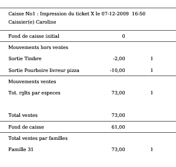
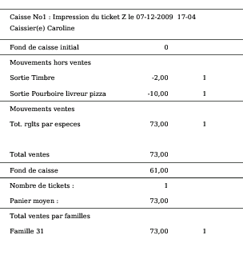

~ Laurux.Pos ~

~ Laurux.Pos ~ |
|
|
|
Ticketx et opérations de fin de journée.
1- Ticket x.
A n'importe quel moment de la journée, il est
possible d'imprimer un ticket x par la touche CTRL + F4.
Un ticketx est la situation de la caisse au moment
de l'impression. Cette impression va récapituler un certain nombre
d'opérations effectuées sur la caisse.

Le ticket x est surtout utilisé pour avoir la position du fond de caisse avant l'impression de la bande Z.
Si le fond de caisse du ticket x est différent du
fond de caisse réel alors il est possible d'apporter une régularisation
en faisant un mouvement d'espèces.
2- Ticket Z et opération de fin de journée.
En fin de journée ou au changement de caissière, il
importe de faire un état précis de la caisse car l'impression de la
bande Z va remettre à zéro les fichiers de caisse.
Ce contrôle va se faire de la façon suivante.
1- On imprime un ticket x par la touche CTRL + F4.
2- On saisit le fond de caisse par la touche CTRL + F6.
3-
Si une différence apparait sans qu'aucune erreur ne soit relevée, on
saisit une régularisation c'est à dire qu'on faire soit une entrée soit
une sortie en indiquant la nature du mouvement (régularisation fond de
caisse).
4- Si le fond de caisse est bon, on imprime la bande Z par la touche CTRL + F5.

Sur la bande Z on a le nombre de tickets saisis pour
la journée ainsi que le montant moyen du panier.
NB: Si la gestion de l'administrateur est active
alors le ticket Z ne pourra se faire que par lui après saisie de son
mot de passe.
5- On quitte la caisse par la touche CTRL + F7 puis de retour sur le menu d'accueil on se déconnecte.
NB: Le moulinage des tickets en fin de journée (sur le serveur), ne pourra se faire qu'a deux conditions.
1- Que la bande Z ait été imprimée sur l'ensemble des caisses.
2- Que l'ensemble des caisses soient déconnectées.
----------------------------------------------------------------------------------------------------------------------